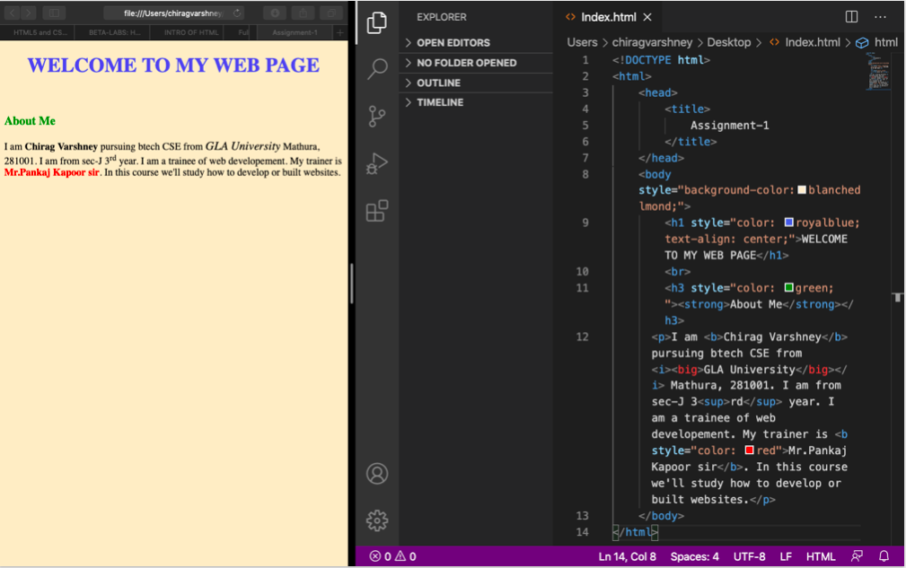
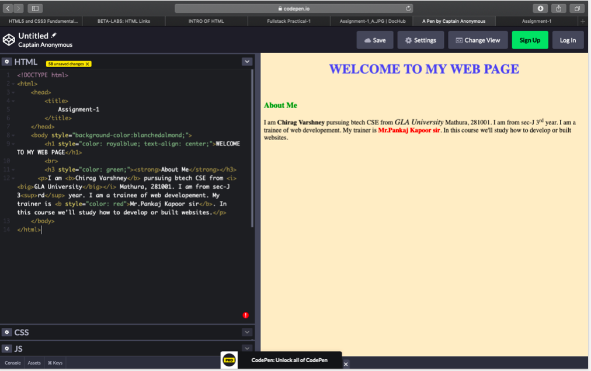

Practical-1: Create a Web Page including HTML basic skeleton using Offline HTML Editor and Online Sandbox Environment
Welcome To Fullstack Course
About Course
Front-end web developement is everything involved in programming the user interface of a web application. Typically it refers Hypertext Markup Language(HTML), Cascading Style Sheets(CSS), and Java Script portion of web site productionas opposed to the database or server-side programming. It encompases everything frombuilding a simple page of HTML text to creatingcomplex, responsive HTML5 websites designed to be accessed via various different browsers, devices and screen sizes.
Output
Offline HTML Editor

Online HTML Editor
